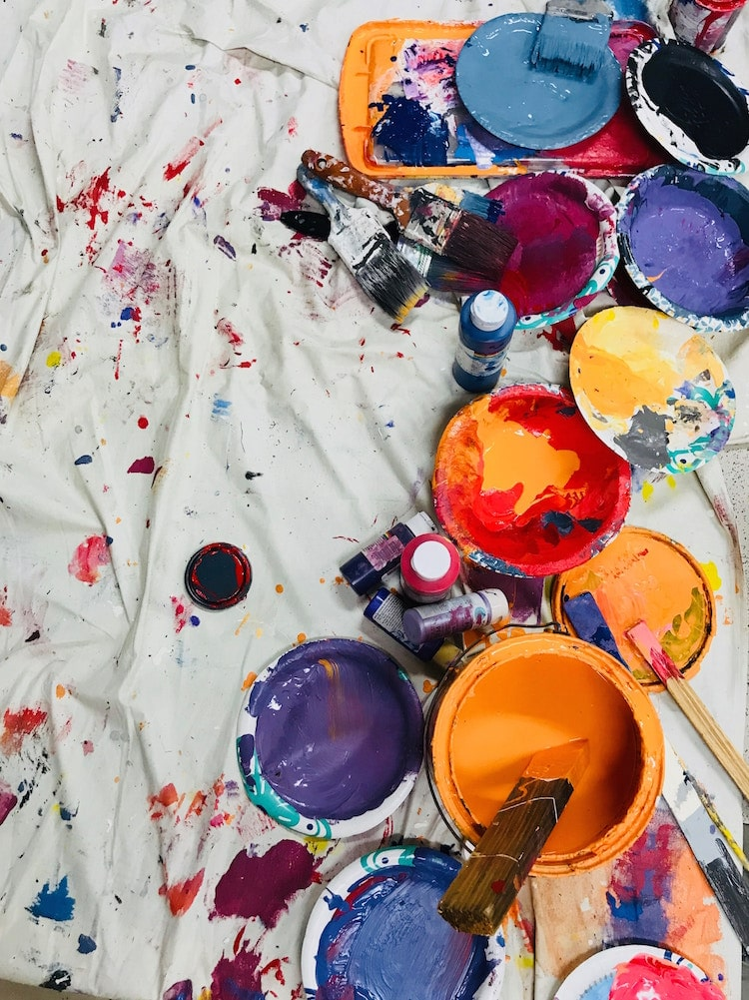
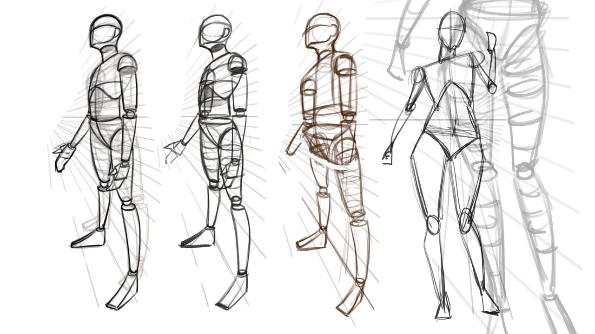
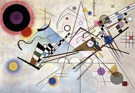
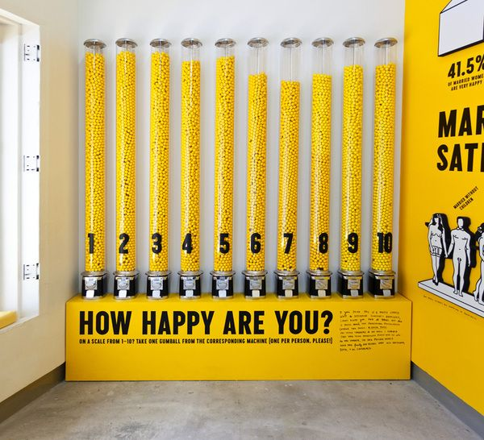

BIENVENIDOS A LA ESCUELA PARA JÓVENES ARTISTAS
Expresiones del arte, cursos informativos mediante las cuales niñas, niños y adolescentes pueden conocer desde un recinto patrimonio cultural, hasta actividades que realizan artistas o estudiantes del Instituto.
Lo ultimo en los cursos 2022

Anatomía humana

Niveles de Composición
TABLERO DE ANUNCIOS COMUNITARIOS
FACULTY/ALUMNI: POST YOUR ART APPRENTICESHIP/INTERNSHIP OPPORTUNITIES FOR UNDERGRADUATES
El Programa de aprendizaje de las artes de Yale es una iniciativa que conecta a los estudiantes universitarios de Yale, en particular a los que reciben ayuda financiera, con profesionales de las artes de cualquier disciplina. Como una opción dentro del modelo de financiación del Premio de Experiencia de Verano (SEA) de Yale, el Aprendizaje de las Artes debe cumplir con los mismos requisitos básicos. A continuación se incluyen detalles adicionales, así como aquellos específicos del aprendizaje de las artes. Los profesores, ex alumnos u otros profesionales de las artes de Yale interesados en presentar puestos a través del programa deben comunicarse con el asesor de Creative Careers de Yale. ¿Qué oportunidades son elegibles? Debe ser por lo menos 30 horas.
CARTOGRAFÍA DEL ARTE PÚBLICO EN NEW HAVEN
¡Hola a todos! He estado mapeando el arte público en New Haven como parte de mi proyecto sin fines de lucro ArtAround y me encantaría invitarlo a unirse a mí, o simplemente verlo y ver qué piensa.

El arte en la naturaleza

Arquigrafía
Reciba noticias de la Escuela de Arte de Yale en su bandeja de entrada: suscríbase a nuestros boletines
Publicamos dos boletines durante el curso académico:
News From New Haven: un boletín mensual público sobre noticias y eventos que suceden en el campus.
Semana en SoA: un correo electrónico semanal solo para la comunidad que enumera los eventos de SoA, así como los eventos públicos y universitarios en New Haven.